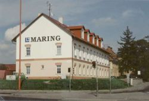
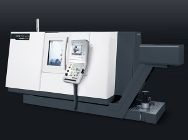
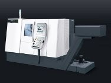
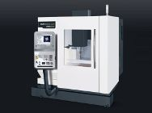
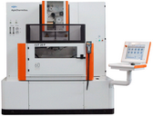
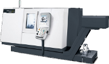
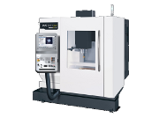
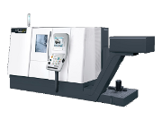

CNC špičkové kvality na strojích nové generace
Naše společnost má dlouhou tradici a bohaté zkušenosti v oboru přesného obrábění kovů. Ve vlastním výrobním areálu ve Starém Městě u Uherského Hradiště realizujeme přesné CNC soustružení, frézování a mikroerozivní drátové řezání s mikronovou přesností.
DMG MORI & AgieCharmilles
Lineární pravítka a diamant
Vedení firmy přímo ve výrobě

Příběh přesnosti ze Starého Města
Společnost MARING-CNC, s.r.o. byla založena v listopadu 2008 ve Starém Městě. Od počátku stavíme na poctivém strojírenském řemesle, špičkových technologiích německé a švýcarské produkce a osobním přístupu k zákazníkům z celé České republiky i zahraničí.
Založení společnosti MARING-CNC
Zápis společnosti do obchodního rejstříku a zahájení zakázkové výroby strojírenských součástí v prostorách na ulici Brněnská ve Starém Městě u Uherského Hradiště.
Investice do produkčních center DMG MORI
Pořízení moderních CNC soustruhů řady DMG CTX 310 eco a CTX 510 eco s poháněnými nástroji a vertikálního frézovacího centra DMG CTX 635 eco s otáčkami 10 000 ot/min.
Instalace drátové EDM řezačky GF AgieCharmilles
Implementace špičkového elektroerozivního řezání CUT 20 P s uzavřenými diamantovými vodítky, rozlišením 0,1 µm a generátorem IPG-V bez bílé vrstvy na řezaném povrchu.
Komplexní výroba strojírenských součástí
Dodávky přesných dílů pro strojírenství, automotive, energetiku a nástrojařství. Flexibilní kusová, malosériová i opakovaná sériová výroba s garantovanou kontrolou jakosti.
Co nabízíme
CNC špičkové kvality na strojích nové generace. Kusová i sériová výroba strojírenských součástí dle dodané výkresové dokumentace či 3D modelů.
Tradice a zkušenosti
Naše firma se může pochlubit dlouhou tradicí v oboru a velkým množstvím spokojených zákazníků po celé České republice.
Nejnovější technologie
Používáme ověřené technologie DMG MORI a GF AgieCharmilles zaručující dokonalou geometrickou kvalitu a stálost zpracování.
Vybavení a CNC strojní park
Podrobný přehled našich CNC obráběcích center, soustruhů a elektroerozivních technologií. Kliknutím na kteroukoliv kartu otevřete kompletní technickou specifikaci, rozjezdy os a parametry stroje.

DMG MORI CTX 510 eco
Výkonné CNC soustružnické centrum pro přesné rotační součástky s točným průměrem až 465 mm, pojezdem Z 1 050 mm a poháněnými nástroji.

DMG MORI CTX 310 eco
Rychlý a vysoce přesný kompaktní CNC soustruh pro kusovou a malosériovou výrobu tvarově náročných rotačních dílů.

DMG MORI CTX 635 eco (DMC 635 eco)
Vertikální CNC frézovací a obráběcí centrum pro komplexní rovinné, tvarové a 3D obrábění prizmatických součástí.

GF AgieCharmilles CUT 20 P
Přesná CNC drátová elektroerozivní řezačka pro dělení a řezání kalených materiálů, střižných nástrojů a mikrogeometrií.

Zakázková výroba strojírenských součástí
Komplexní zakázková výroba přesných strojírenských dílců z ocelí, nerezi, duralu a barevných kovů dle výkresové dokumentace.

Dělení materiálu a příprava polotovarů
Přesné dělení hutních materiálů, kruhových tyčí, trubek a bloků na moderních pásových pilách pro zajištění návazného obrábění.

Technická kontrola kvality a měření
Mezioperační a výstupní technická kontrola geometrické přesnosti a drsnosti povrchu kalibrovaným měřicím vybavením.
Proč spolupracovat právě s námi?
Díky ucelenému strojnímu parku v jedné dílně a přímé komunikaci s vedením společnosti garantujeme rychlou odezvu na poptávky, dodržení sjednaných termínů a precizní provedení.
Poptávka a výkresová dokumentace
Zašlete nám výkresy (PDF, DWG, DXF) nebo 3D modely (STEP). Náš odborný tým provede technologickou analýzu a připraví nabídku.
Dělení a příprava polotovarů
Materiál dělíme přímo na vlastních pásových pilách s minimálními přídavky, čímž šetříme materiál a zkracujeme výrobní časy.
CNC obrábění & EDM řezání
Obrábění probíhá na prémiových centrech DMG MORI a drátové řezačce AgieCharmilles s programováním v moderním CAM prostředí.
100% kontrola a bezpečná expedice
Každý dílec projde rozměrovou kontrolou kalibrovanými měřidly. Hotové součástky pečlivě balíme a expedujeme spolehlivou přepravou.
Kariéra v MARING-CNC
Naše firma se neustále rozvíjí a hledá šikovné lidi do strojírenské výroby. Nabízíme práci na moderních CNC obráběcích strojích DMG MORI a drátové elektroerozi AgieCharmilles, férové ohodnocení, zázemí stabilní české rodinné firmy a čisté pracovní prostředí v areálu Staré Město.
Máte zájem o spolupráci? Napište nám nebo zašlete svůj životopis na maringcnc@seznam.cz.
Kontakty a výrobní areál
Rádi zodpovíme jakékoliv technické dotazy a pomůžeme s realizací vašeho projektu. Kontaktujte přímo naše jednatele nebo využijte poptávkový formulář.
MARING-CNC, s.r.o.
Sídlo a výroba:
Brněnská 490
686 03 Staré Město (okres Uherské Hradiště)
Spisová značka: C 60636 vedená u Krajského soudu v Brně
Napište nám
Máte zájem o kalkulaci nebo novou zakázku? Vyplňte formulář a my se vám co nejdříve ozveme zpět.
Kde nás najdete
Výrobní prostory jsou situovány přímo ve Starém Městě u Uherského Hradiště na ulici Brněnská.